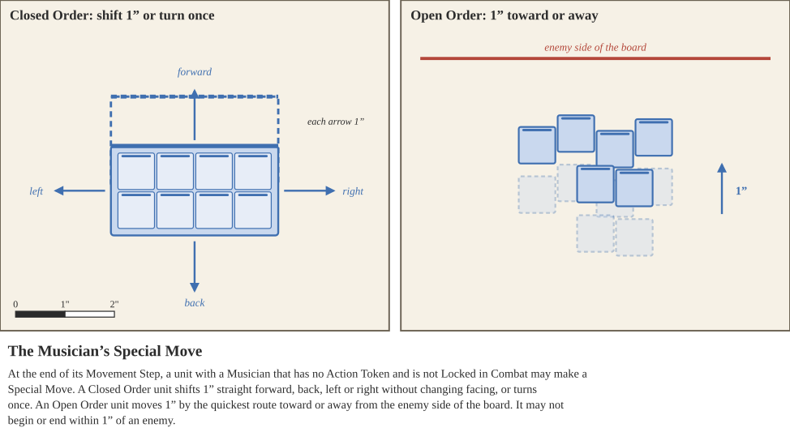
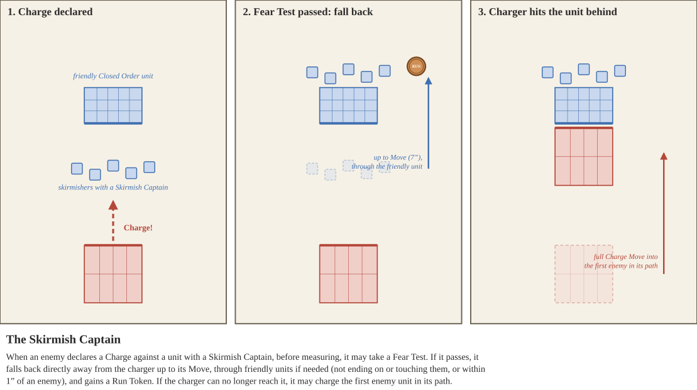
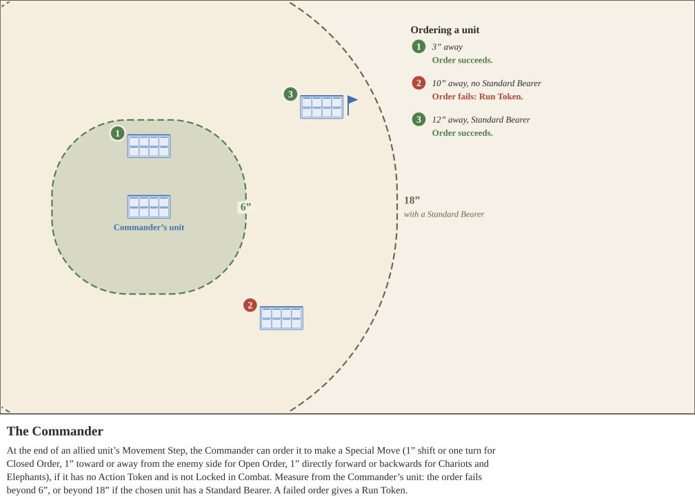

If this unit is deployed via the Scout or Ambush special rule, after the unit is placed, the opponent reveals to the controlling player 2 Command cards they did not pick, at random.
The upgraded model grants the unit the Aim special rule.
They also contribute one extra attack for Shooting, but not for Combat.
When this unit’s Charge makes contact, the defending player loses Army Morale equal to this unit’s base Training.
Additionally, enemy units may not be deployed within 12” of this unit during deployment.
Models upgraded to Lead Captain provide additional points equal to their Training value to the Army Morale.
They also contribute one extra attack for Combat or Shooting.
Models upgraded to Lord provide additional points equal to three times their Training value to the Army Morale.
The model grants the unit the Noble special rule.
While the Lord’s unit is fleeing, the controlling player loses this model's Training value in Army Morale each round. When this unit is eliminated, the controlling player loses this model's Training Value in Army Morale, and the opponent gains that much in Army Morale.
Models upgraded to Musician provide additional points equal to their Training value to the Army Morale.
The Musician grants the unit the ability to shift their position with a Special Move if they do not have an Action Token and they are not Locked in Combat. At the end of the unit's Movement Step, they perform a Special Move depending on if they are an Open Order or Closed Order unit.
If the unit is Closed Order it may Special Move directly forward, backwards, left, or right 1” without changing facing, or it may turn once. If the unit is Open Order, they move 1” along the route quickest towards or away from the enemy side of the board. They may not begin or end this shift in position within 1” of any enemy unit. This is considered movement. This Character has a special interaction with the Commander Special Character.

When this unit is eliminated, the controlling player loses this model's Training Value in Army Morale, and the opponent gains that much in Army Morale.
Ranger Captains grant the Surefooted special rule to their unit.
Models upgraded to Rear Captain provide additional points equal to their Training value to the Army Morale.
The unit gains a +1 bonus to Break Tests, and a +1 bonus to Rally Tests when attempting to Rally itself.
Shamans grant the Frenzy special rule to their unit.
When an enemy unit declares a Charge against this unit, before measuring, this unit may take a Fear Test. If it passes, it falls back: move it directly away from the charging unit up to its Move value. While falling back it may move through allied units, but may not end its move on or touching them, or within 1” of an enemy unit. It then gains a Run Action Token. The charging unit then measures as normal. If it can no longer reach this unit, it may instead charge the first enemy unit in its straight path, using its full Charge Move. If there is none, it moves as far as it can and does not lose Army Morale for a failed charge. If the Fear Test fails, the unit stays where it is and the charge resolves normally.

Light Warrior units with a Skirmish Captain must be deployed in Open Order.
Models upgraded to Standard Bearer provide additional points equal to two times their Training value to the Army Morale. This Character has a special interaction with the Commander Special Character.
While the Standard Bearer’s unit is fleeing, the controlling player loses this model's Training value in Army Morale each round. When this unit is eliminated, the controlling player loses this model's Training Value in Army Morale, and the opponent gains that much in Army Morale.
The upgraded model removes the Levy special rule for the unit.
However, whenever the unit passes a Break or Rally test, it suffers 1 Damage. This Damage has no save and causes Army Morale loss as normal.
The upgraded model grants the unit the Noble special rule, and the unit loses the Levy special rule if it has it.
They also contribute one extra attack for Combat or Shooting.
The upgraded model grants the unit the Volley special rule.
They also contribute one extra attack for Shooting, but not for Combat.
Models upgraded to Army Standard Bearer provide additional points equal to four times their Training value to the Army Morale. This Character does not have any special interaction with the Commander Special Character.
While this Army Standard Bearer’s unit is fleeing, the controlling player loses this model's Training value in Army Morale each round. When this unit is eliminated, the controlling player loses this model's Training Value in Army Morale, and the opponent gains that much in Army Morale.
This model also grants you a +1 bonus to Initiative Rolls. You may only have 1 of each Retinue Special Character unless otherwise stated.
Models upgraded to Army Musician provide additional points equal to two times their Training value to the Army Morale.
The Army Musician does not affect their units marching like a normal Musician, but instead affects the ferocity of the entire army.
At the end of the Activation Phase, but before Combat, the player controlling the Army Musician may choose to replace all of their units' Hold Action Tokens with Charge Action Tokens, or replace all of their units' Charge Action Tokens with Hold Action Tokens. Should multiple players have Army Musicians, they take turns deciding to use their Army Musicians in Initiative Order. Chariot and Elephant units are not affected by the Army Musician.
While this Army Musician’s unit is fleeing, the controlling player loses this model's Training value in Army Morale each round. When this unit is eliminated, the controlling player loses this model's Training Value in Army Morale, and the opponent gains that much in Army Morale.
This model also grants you a +1 bonus to Initiative Rolls. You may only have 1 of each Retinue Special Character unless otherwise stated.
Models upgraded to Commander provide additional points equal to three times their Training value to the Army Morale.
The Commander can order units to make small adjustments to their fighting position, should they not have an Action Token or be Locked in Combat. At the end of any allied unit’s Movement Step, a player may choose to activate their Commander. Measure the distance between the chosen unit and the unit with the Commander Special Character.
If the distance is greater than 6”, the special ability fails. However, if the selected unit has a Standard Bearer, instead the special ability fails if the distance is greater than 18”.
If the special ability fails, give the chosen unit a Run token as it struggles to understand its Commander in the chaos.
If the special ability succeeds, the chosen unit may perform a Special Move depending on if it is an Open Order or Closed Order unit. If the chosen unit is Closed order it may Special Move directly forward, backwards, left, or right 1” without changing facing, or it may turn once. If the chosen unit is Open Order, they move 1” along the route quickest towards or away from the enemy side of the board. This is considered movement. If the chosen unit has a Musician, you may combine this move with the Musician’s Special Move, in either order.

While this Commander’s unit is fleeing, the controlling player loses this model's Training value in Army Morale each round. When this unit is eliminated, the controlling player loses this model's Training Value in Army Morale, and the opponent gains that much in Army Morale.
This model also grants you a +1 bonus to Initiative Rolls. You may only have 1 of each Retinue Special Character unless otherwise stated.